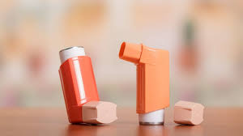

Abdominal painsmore_vert
WHAT TO DO:
-Treat the symptoms
-Provide clear fluids like water, diluted juice, serve with bland foods
- Avoid spicy or greasy foods, caffeinated or carbonated drinks until 48 hours after all symptoms have gone away
Asthma attackmore_vert
WHAT TO DO:
-Remain calm and reassure the patient
-Help them sit up and loosen tight clothing to make breathing as unobstructed as possible
-If you know or can identify the trigger, get the patient away from it or move it out from where the patient is. Triggers could be pollen, dust, mold, feather, fur, smoke, gases, cold weather etc.
-Find out if the person has an Asthma Plan that they follow and follow it through
-Call for Medical assistance
-If the person has asthma medication, such as an inhaler, assist in using it. DO NOT SHARE INHALERS
-After four puffs, wait four minutes. If the person still has trouble breathing, give another set of four puffs.
-Monitor and observe them closely until help arrives
-Do not assume the person’s asthma is improving if they become drowsy or you no longer hear wheezing. It could be worsening

Burns and Scaldsmore_vert
WHAT TO DO:
-Move the person away from the heat source to stop the burning
-Cool the burn with cool or lukewarm running water for about 20 minutes, do not use ice water, do not apply lotions of any kind or greasy substances
- Remove any clothing or jewelry close to the burnt area but DO NOT remove burned clothing stuck to the skin and don't break the blisters
-Ensure your hands are as clean as possible before handling the wound
-Cover the area with a simple clean dressing or similar material such as clean lint, freshly laundered linen
-Seek medical attention as soon as possible

Choking (Adult)more_vert
WHAT TO DO:
-If airway is only partly blocked, mild coughing should dislodge the object blocking the airways
- do not put your fingers in their mouth
-If coughing doesn't work, stand behind them slightly to one side, support their chest with one hand
- Lean them forward so the object blocking the airway can come out rather than moving down
- Give up to 5 sharp blows between their shoulder blades with the heel of your hand
- Check if blockage has cleared
-If not; carry out abdominal thrusts:
-Standing behind the person, place your arms around their waist and bend them forward
-Clench one fist and place it right above their belly button
- Put the other hand on top of your fist and pull sharply inwards and upwards
- Repeat up to 5 times
-If still blocked, request for medical attention while carrying out these procedures over again.
Choking (0 - 1 yr Babies) more_vert
WHAT TO DO:
-Call for medical help
-If you can see the object, try to remove it
-If the child is coughing, encourage them to cough properly to bring up the inject choking them
-If the child is silent and can't breathe, SEEK IMMEDIATE MEDICAL ATTENTION
-If the child is still conscious, lay the child face down on your lap, or support the child in a forward leaning position and give 5 blows from behind
-If choking is not relieved, perform chest thrusts for infants under 1 year old or abdominal thrusts for infants over a year old
Cutsmore_vert
Incised wounds: caused by sharp objects like knife or Razor
Lacerations: torn and irregular edges caused by machinery or animal claws
Contused wounds: accompanied by bruising, caused by crushing or direct blow
Puncture wounds: might have small openings but might also be very deep, caused by a stab from a sharp pointed instrument
WHAT TO DO:
- Place the victim properly and elevate the bleeding part
- Allow blood clots to be formed do not disturb and clot that is formed
- Expose the wound as carefully as possible and remove any visible foreign bodies that can easily be picked out or wiped off
- Apply direct pressure on the cut with a clean cloth or tissue until bleeding stops
- Apply clean dressing and bandage
- If foreign body in the wound cannot be removed easily, cover it with a dressing, build up sufficient pads around the wound without apply pressure to the foreign body
- Seek immediate medical attention as soon as possible

Diarrhea more_vert
WHAT TO DO:
-Drink plenty of clear fluids like water, fruit juices
-Avoid fruits juices
-Avoid milk based products, alcohol, apple juice and caffeine for 3 to 5 days after feeling better

Dizzinessmore_vert
WHAT TO DO:
-Treat symptoms
-Lie down or sit still
-Avoid sudden changes in position
-Sip clear fluids slowly

Electrocution more_vert
WHAT TO DO:
- Switch off the power supply by removing the plug or breaking the cable. Do not attempt to do this with scissors, a knife or any metal
- Remove the patient from the contact with great care using dry insulating materials like gloves, folded cloth or newspaper
- If patient is conscious, reassure the patient
- Lay the person down on their back with the head low and turned to one side
- Loosen clothing around neck, chest and waist
- Wrap them in a blanket
- Give sips of water, or any liquid except alcohol
- Seek immediate medical attention

Food poisoningmore_vert
WHAT TO DO:
-Avoid solid foods until vomiting ends, and then eat light bland foods only
-Do not eat fried, greasy spicy or sweet foods
-Do not take anti-nausea or anti diarrhea medications unless prescribed by a doctor
-Drink clear fluids starting with small sips then gradually drinking more
- If vomiting and diarrhea lasts more than 24hrs, drink an oral rehydration solution
-Seek immediate medical attention if symptoms last more than 3 days, there's severe stomach pain, fever, bloody stools or prolonged or bloody vomiting